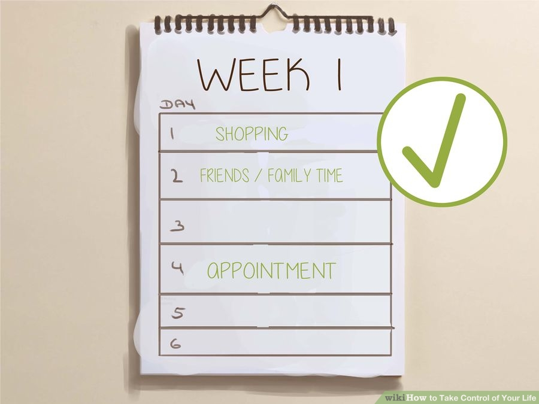

How to Take Control of Your Life
Part 1 Changing Your Thinking
- Define control. Figure out what taking control of your life means to you. Is it the ability to influence your destiny, regulate your present, keep your negative behavior in check, or do you simply want more willpower? Taking control of your life requires working through multiple challenges, including your own perceptions, building self-confidence as well as taking an action. Determine what you want more control over, and that will help focus your energy.
- Accept yourself. The first step to succeeding in anything is to know and accept your strengths and limitations. Show compassion for yourself. Accept not only the good but the bad too. Always strive to improve the things you don’t like or that you struggle with.
- Consider your values. You need to determine what your values are so that you can get your priorities straight. Think about what and who is important to you — Is it freedom, happiness, equality, money, your family? Write down a list of your values (at least 10 of them), preferably in order from most important to least important.
- Cultivate good character traits. When you improve beneficial character traits and virtues, you will gain more control over your life. This is because having these traits will encourage you to obtain your goals and taken on other qualities that you want. Good traits to work on for this purpose are courage, temperance, wisdom, and self-discipline.
- Decide what motivates you. Many of us have a passion—something that we enjoy and that drives us to succeed. Think about what you would like to do in life if nothing stood in your way. If you don’t know, then you will need to write down the activities you like to do that make you feel good. Consider what inspires you as well as your skills and talents.
- Create goals. Find out what you really want out of life this year — a house, a good job, a healthy relationship? Write each goal down, and then come up with ideas that can help you accomplish that goal. Write these ideas down into positive action statements, such as, “I will save up money.” Then, go over all your goals and ideas, and decide on three goals and three action statements for each one that you will do.
- Get control of your emotions. Emotions can be wonderful experiences but expressing them improperly can harm your ability to attain goals and damage relationships. You need to learn how to understand, process and respond to your feelings in a way that is healthy and helpful to you.
- Let go of baggage. Sometimes negative thoughts or experiences can be tough to let go — you may have a feeling that they define you, or they may be so habitual you may be afraid to be without them, or you may simply not know how to let go. You must learn that you are not your problems and that they do not determine your worth as a person or how you make choices today. Learning to let go of past baggage will help you become more solution-oriented, broaden your vision, and help you take control of your life.


Part 2 Making Lifestyle Changes
- Be independent. If you are co-dependent on others for your emotional health, lifestyle, or need them to tell you what to do, you are not in control of your life. Learn to solve your own problems and spend time alone to think and reflect. Only ask for help when you really need it, and learn from the people who help you so you can do more on your own next time.
- Get organized. Organization is important when you want to take control of your life. If everything is chaos in your head and in your house, then it is difficult to know where to start to solve any messes. Keep everything as neat as possible at home and at work so you don’t have to deal with clutter, and remember to put things back where they should be. Make lists, use a calendar and make decisions often instead of putting everything off.
- Spend some time on your appearance. Devoting some energy toward the way you appear to others can go a long way to make you feel better and more in control. Get a haircut, dye your hair, or do your hair in a new style. Buy or borrow some new clothes, and be sure to smile as often as possible. Be mindful of how much you spend, though, so you can keep control of your finances.
- Take care of yourself. Pay attention to what you eat, how much you eat and try to get some exercise every day. For strengthening your willpower, you will want to eat small portions of energy-rich foods throughout the day (every 3 hours). These foods include lean proteins (meat and legumes) and complex carbohydrates (whole grains, fruit and vegetables). Avoid sugary, fatty, overly processed or salty foods that can make you feel bad and not have the strength to take control of your life.
- Get sleep. When you are tired, you don’t have the strength to maintain your self-control or do more than you have to. Taking control of your life requires being alert and aware of what is happening and where you want to go. Sleep for as long as you need to feel rested when you wake up — usually about eight hours. Start to relax at least 30 minutes before you go to sleep, follow a bedtime ritual (e.g. drink warm tea, brush your teeth, get into bed) and try to go to sleep about the same time every night and wake up at the same time each morning.
- Develop positive relationships. Surround yourself with people who share similar values and goals. Try to get to know the people you admire, and spend time with them so their behavior can help influence you for the better. Meet new people at places or events that support your values or goals. Talk to people close to you, and enlist their help in assisting you to achieve more control over your life.
- Cut back on commitments. If you feel like you are constantly up against time in a never-ending race to complete tasks, rushing through or being pulled in multiple different directions, it’s time to reevaluate your priorities. Take a look at all the things that demand your time on a daily basis. Reduce those commitments down to just a few of the most important things that you can really focus on.
- Have fun. Life isn’t all work and no play. Allow yourself time to pursue your hobbies, take vacations, and spend time with those you care about. Give in to a little selfish pleasure every now and then, such as an ice cream cone or buying a new pair of shoes. You’re in control now, so make the most out of your life experiences.

Part 3 Being Productive
- Start early. After you spend a few minutes for yourself, it’s time to focus on the most important tasks. Knock them out right away to reduce your daily stress. You have more energy in the morning, and it is easier to focus and do better quality work. In turn, this allows you to finish a larger volume of work.
- Focus on one thing at a time. Decide which task is the most important to finish first and focus on it until completion. Multitasking actually decreases productivity and can increase the time it takes to finish the first task by 25%. This is because you are shifting your attention from task to task, which takes more time. Don’t worry about completing all the tasks you need to do for the day at one time, just stay in control and do one task at a time, making steady progress.
- Stop wasting time. We live in a world with many distractions at our fingertips. Nevertheless, know that you actively make the choice whether to stay engaged in one task or get distracted by a mobile game, TV, Facebook, or a text message. Instead of coming home and flipping on the TV because it is an easy way to pass time, do something productive or on your to-do list so you stay in control of the moment. Working out, practicing a hobby, or working on relationships are all productive and enjoyable pastimes.
- Take breaks. We are wired to focus for about 90 minutes at a time. After that, we begin to get fatigued and don't perform as well. Focus without interruption for 90 minutes at a time, and then take breaks for at least a few minutes. This will allow your mind to rest, your body to recharge and you to relax emotionally.
- Develop good habits. When our willpower is limited, it is important not to rely on it as the only method of self-control. Develop rituals that you do over and over again at specific times so that it is easier to act or think a certain way during other situations. For example, you might tell yourself, “I am calm” repeatedly in your home, while you rub a necklace bead. Then, the next time you are confronted with a stressful situation, you can reach in your pocket, rub a bead, and feel calm.
- Take Action. You can have all the goals in the world but never get anywhere if you don’t take action to achieve those goals. Do what you have to in order to get what and where you want. Take small steps but be sure to do something every day that helps you get closer to your end goal. This could be a mundane task, practicing positive thoughts, doing paperwork or something else.
Tips
- If you mess up today, just remember that tomorrow's a new day. You can always try again the next day to gain more control over your life.
- Helping other people can make you feel really good about yourself. If you have the time, find somewhere that you can volunteer. Animal shelters, food banks and schools can almost always use an extra hand.